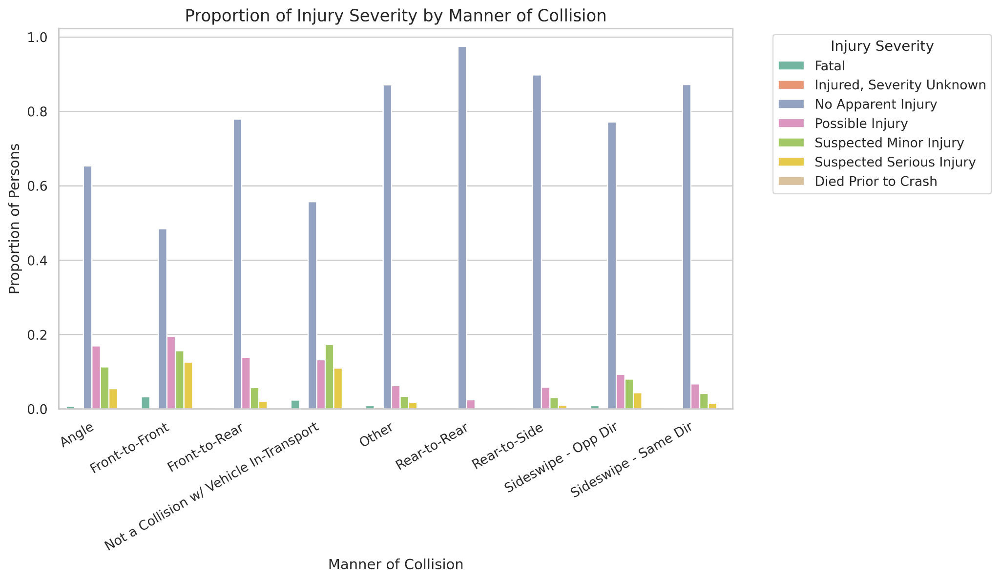
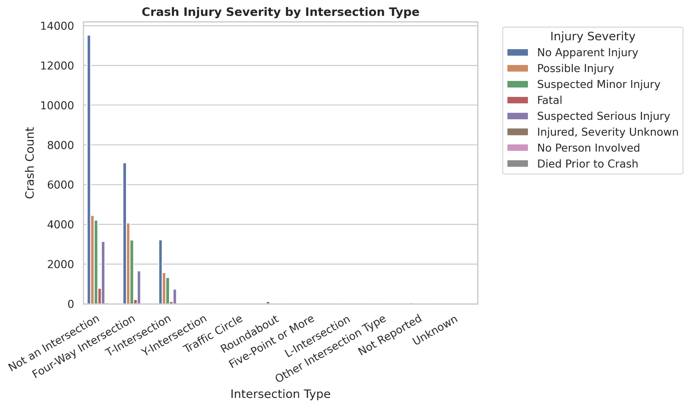
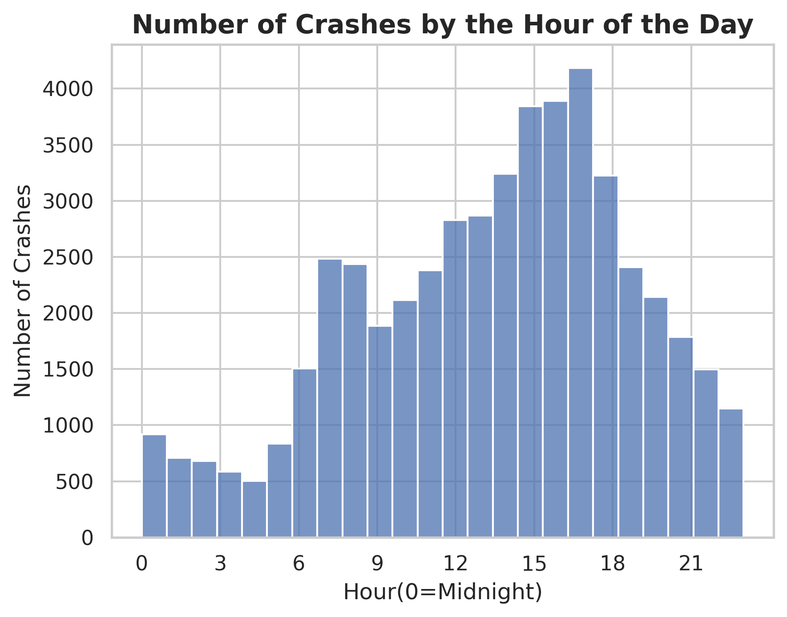
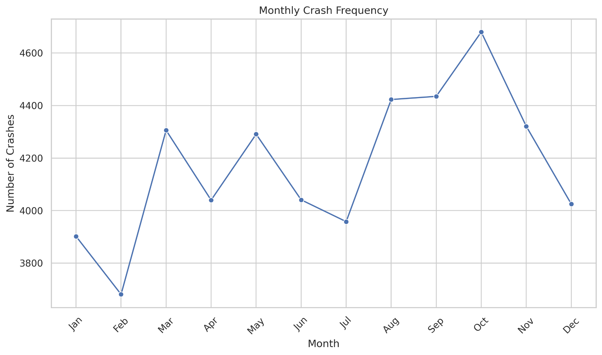
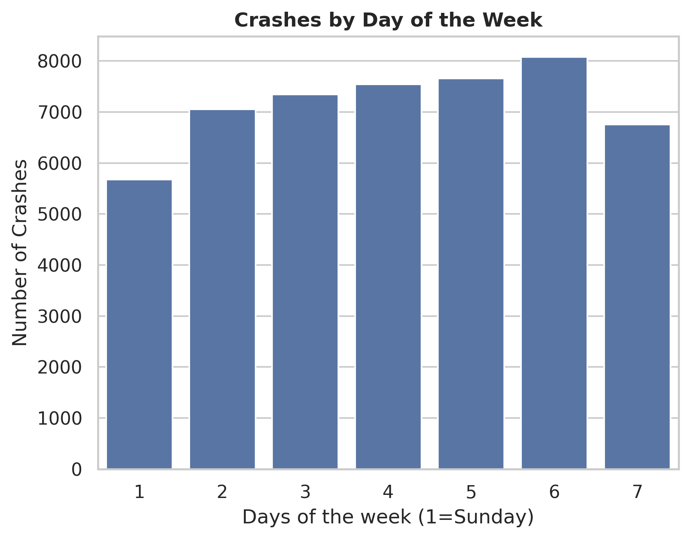
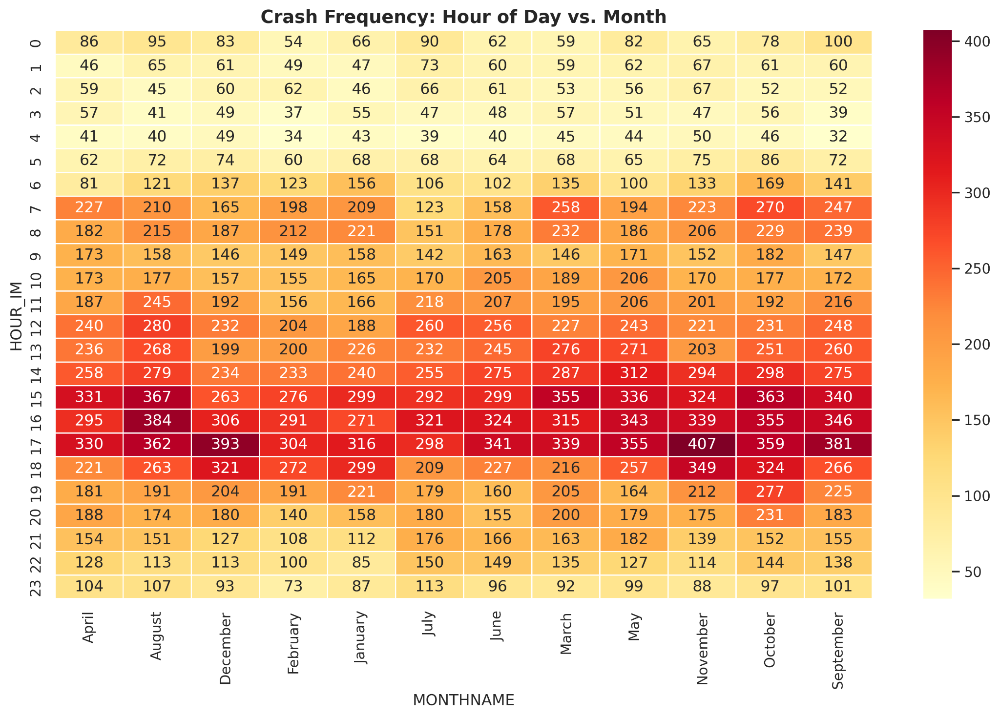
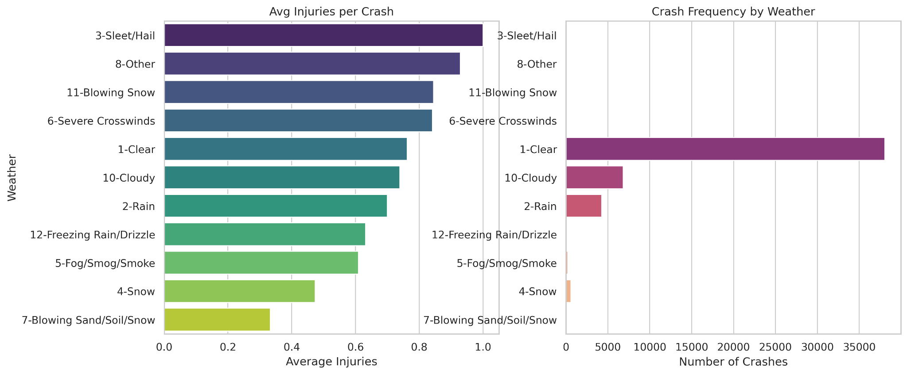

Road safety · Collision characteristics · Injury outcomes
Crash Frequency and Injury Severity in U.S. Crash Records
How do injury outcomes vary by collision configuration, and where and when are recorded crashes concentrated?
I examined police-reported crash records from NHTSA’s Crash Report Sampling System (CRSS), using categorical comparisons and temporal profiles to separate two transportation-safety questions: where crash counts concentrate and which collision types exhibit more severe injury distributions.
Principal finding. Front-to-front collisions showed a greater share of fatal and suspected serious injuries than the other displayed collision categories. Recorded crashes peaked in the late afternoon; four-way and T-intersections accounted for the largest counts among the displayed intersection types.
Data and analytical design
The project used the CRSS Accident, Vehicle, and Person files to examine crash circumstances and individual injury outcomes. In Google Colab, I used Pandas for categorical aggregation, cross-tabulation, and ordered category handling, and Seaborn and Matplotlib for count plots, proportional comparisons, and month–hour heatmaps.
The report documents comparison-specific treatment of missing and unknown values and use of CRSS imputed fields: INJSEV_IM for person-level injury severity, and NO_INJ_IM and ALCHL_IM for crash-level injury counts and alcohol involvement.
| Comparison | Measure | Analytical purpose |
|---|---|---|
| Collision configuration | Persons in each injury category ÷ persons in that collision category | Compare severity composition using a within-category denominator |
| Intersection context | Displayed counts by intersection and injury category | Locate concentrations in the observed records |
| Time of occurrence | Hourly counts and month–hour cross-tabulation | Identify the daily peak and examine its recurrence across months |
Collision configuration and injury severity
Front-to-front collisions had the largest fatal and suspected serious injury proportions among the displayed categories. Rear-to-rear and rear-to-side collisions were predominantly classified as “no apparent injury.” This comparison identifies differences in conditional injury distributions; it does not establish which collision type occurs most frequently.

Spatial context and time of occurrence
Four-way and T-intersections contributed the largest recorded counts among intersection configurations, while non-intersection locations accounted for the largest overall count. This pattern identifies contexts for further investigation; comparing safety performance between intersection designs would also require traffic exposure and site characteristics.

The hourly profile showed a pronounced late-afternoon concentration, reaching its maximum at 17:00. The month–hour heatmap also showed recurring afternoon concentrations. Together, these outputs indicate a persistent time-of-day pattern rather than an isolated monthly peak.

Temporal patterns and operating conditions




Transportation-safety interpretation
The analysis distinguishes a severity-focused question—why front-to-front configurations have a more adverse injury profile—from a frequency-focused question—why recorded crashes cluster at particular locations and times. These findings frame subsequent investigation of opposing-direction conflicts, intersection operating conditions, and time-dependent traffic exposure. They support selecting questions for detailed safety assessment, rather than prescribing an intervention from counts alone.